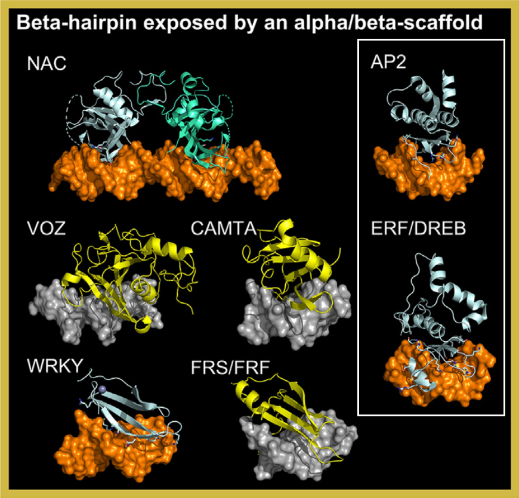

The AP2/EREBP class is a plant-specific group of transcription factors divided into two families: AP2 and ERF/DREB.
These factors are characterized by a beta-hairpin motif that interacts with the DNA major groove, often topped by an alpha-helix.
AP2 Family: Crystal structures of TEM1 (PDB: 7ET4) and AtERF1 (PDB: 1GCC) reveal a beta-hairpin overhanging the major groove,
stabilized by an adjacent alpha-helix
[src]
[src].
ERF/DREB Family: The structure of AtERF96 (PDB: 5WX9) shows an additional N-terminal alpha-helix that inserts into the minor groove,
enhancing DNA binding specificity
[src].
This class is absent in mammals and represents a unique adaptation in plants, playing critical roles in stress responses,
development, and hormone signaling. The structural diversity within AP2/EREBP factors underscores their functional versatility
in plant gene regulation.